上一节介绍了计算图的反向传播是基于链式法则成立的。本节将以“+”和“×”等运算为例，介绍反向传播的结构。
首先来考虑加法节点的反向传播。这里以 z = x + y 为对象，观察它的反向传播。z = x + y 的导数可由下式（解析性地）计算出来。
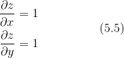
如式（5.5）所示，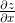 和 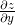 同时都等于 1。因此，用计算图表示的话，如图 5-9 所示。
在图 5-9 中，反向传播将从上游传过来的导数（本例中是 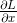）乘以 1，然后传向下游。也就是说，因为加法节点的反向传播只乘以 1，所以输入的值会原封不动地流向下一个节点。
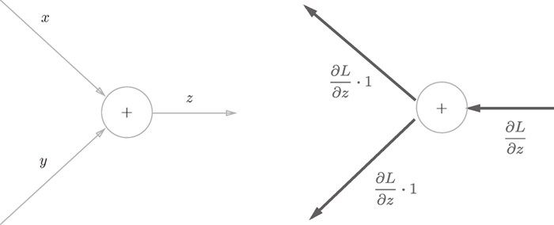
图 5-9 加法节点的反向传播：左图是正向传播，右图是反向传播。如右图的反向传播所示，加法节点的反向传播将上游的值原封不动地输出到下游
另外，本例中把从上游传过来的导数的值设为 。这是因为，如图 5-10 所示，我们假定了一个最终输出值为 L 的大型计算图。z = x + y 的计算位于这个大型计算图的某个地方，从上游会传来 的值，并向下游传递 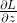 和 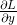。
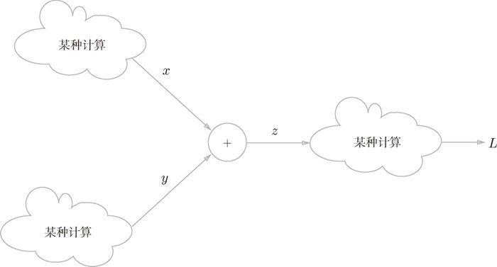
图 5-10 加法节点存在于某个最后输出的计算的一部分中。反向传播时，从最右边的输出出发，局部导数从节点向节点反方向传播
现在来看一个加法的反向传播的具体例子。假设有“10 + 5=15”这一计算，反向传播时，从上游会传来值 1.3。用计算图表示的话，如图 5-11 所示。
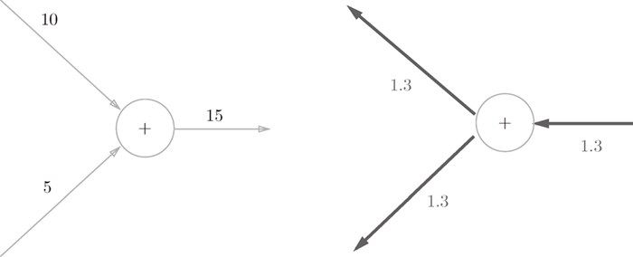
图 5-11 加法节点的反向传播的具体例子
因为加法节点的反向传播只是将输入信号输出到下一个节点，所以如图 5-11 所示，反向传播将 1.3 向下一个节点传递。
接下来，我们看一下乘法节点的反向传播。这里我们考虑 z = xy。这个式子的导数用式（5.6）表示。
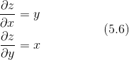
根据式（5.6），可以像图 5-12 那样画计算图。
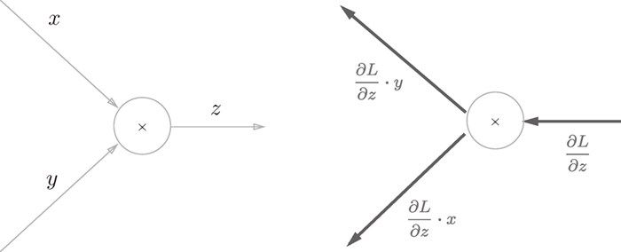
图 5-12 乘法的反向传播：左图是正向传播，右图是反向传播
乘法的反向传播会将上游的值乘以正向传播时的输入信号的“翻转值”后传递给下游。翻转值表示一种翻转关系，如图 5-12 所示，正向传播时信号是 x 的话，反向传播时则是 y；正向传播时信号是 y 的话，反向传播时则是 x。
现在我们来看一个具体的例子。比如，假设有“10 × 5 = 50”这一计算，反向传播时，从上游会传来值 1.3。用计算图表示的话，如图 5-13 所示。
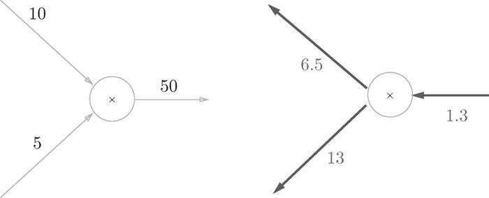
图 5-13 乘法节点的反向传播的具体例子
因为乘法的反向传播会乘以输入信号的翻转值，所以各自可按 1.3 × 5 = 6.5、1.3 × 10 = 13 计算。另外，加法的反向传播只是将上游的值传给下游，并不需要正向传播的输入信号。但是，乘法的反向传播需要正向传播时的输入信号值。因此，实现乘法节点的反向传播时，要保存正向传播的输入信号。
再来思考一下本章最开始举的购买苹果的例子（2 个苹果和消费税）。这里要解的问题是苹果的价格、苹果的个数、消费税这 3 个变量各自如何影响最终支付的金额。这个问题相当于求“支付金额关于苹果的价格的导数”“支付金额关于苹果的个数的导数”“支付金额关于消费税的导数”。用计算图的反向传播来解的话，求解过程如图 5-14 所示。
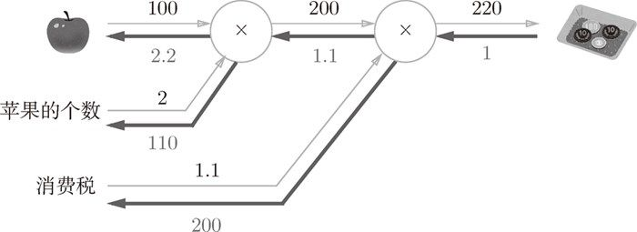
图 5-14 购买苹果的反向传播的例子
如前所述，乘法节点的反向传播会将输入信号翻转后传给下游。从图 5-14 的结果可知，苹果的价格的导数是 2.2，苹果的个数的导数是 110，消费税的导数是 200。这可以解释为，如果消费税和苹果的价格增加相同的值，则消费税将对最终价格产生 200 倍大小的影响，苹果的价格将产生 2.2 倍大小的影响。不过，因为这个例子中消费税和苹果的价格的量纲不同，所以才形成了这样的结果（消费税的 1 是 100%，苹果的价格的 1 是 1 日元）。
最后作为练习，请大家来试着解一下“购买苹果和橘子”的反向传播。在图 5-15 中的方块中填入数字，求各个变量的导数（答案在若干页后）。
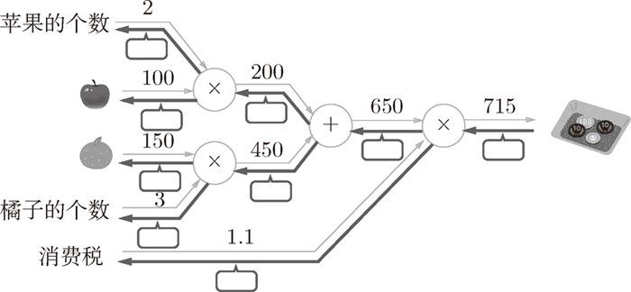
图 5-15 购买苹果和橘子的反向传播的例子：在方块中填入数字，完成反向传播